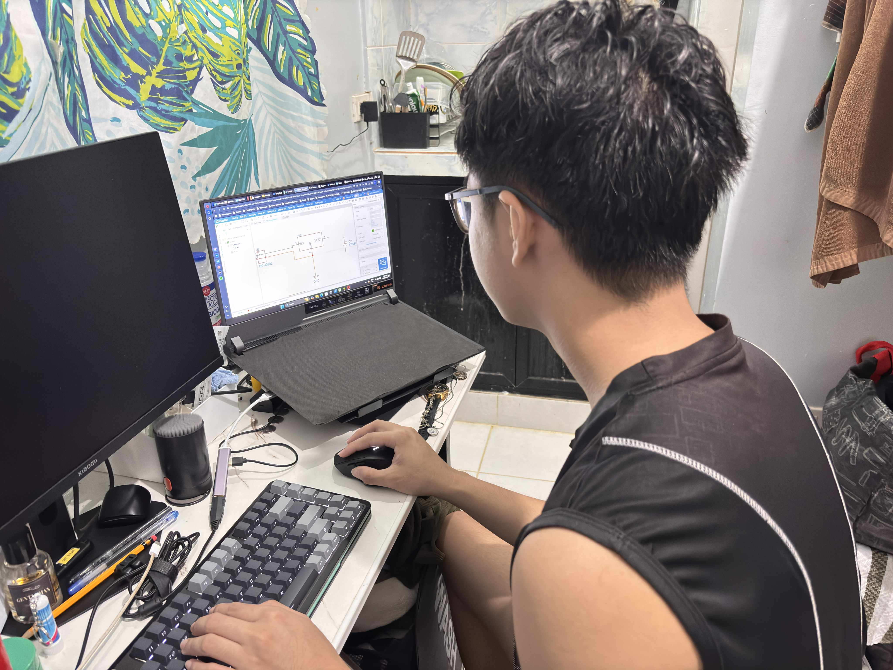
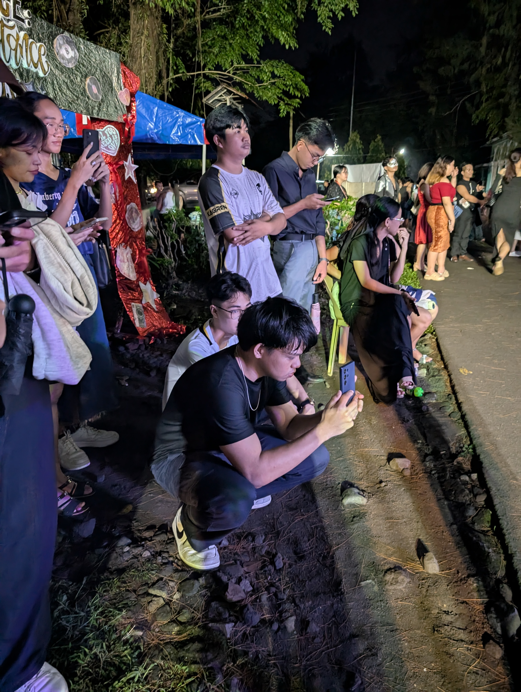
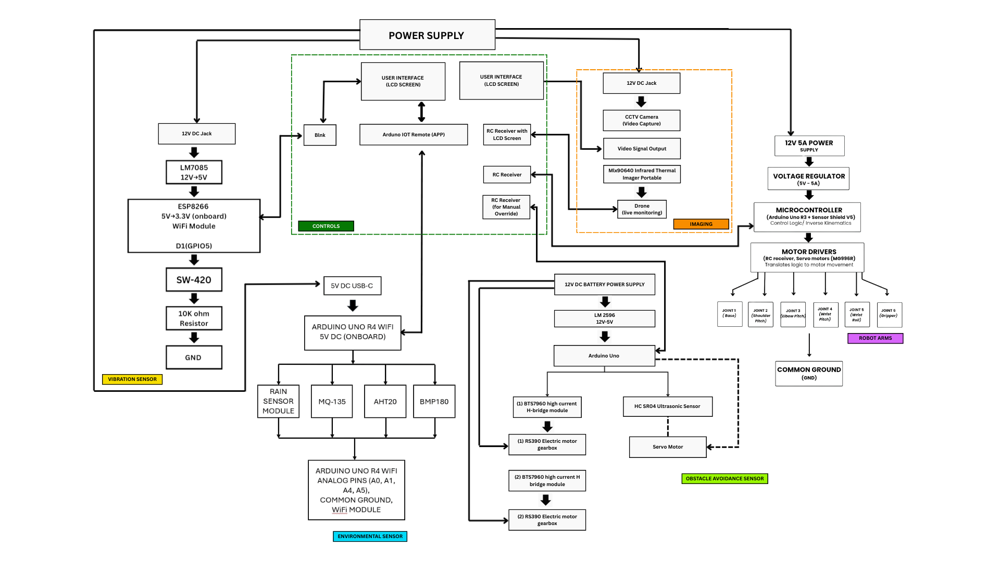
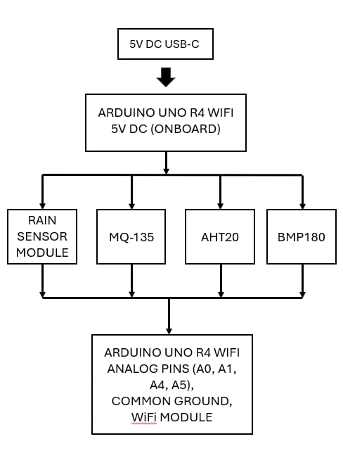
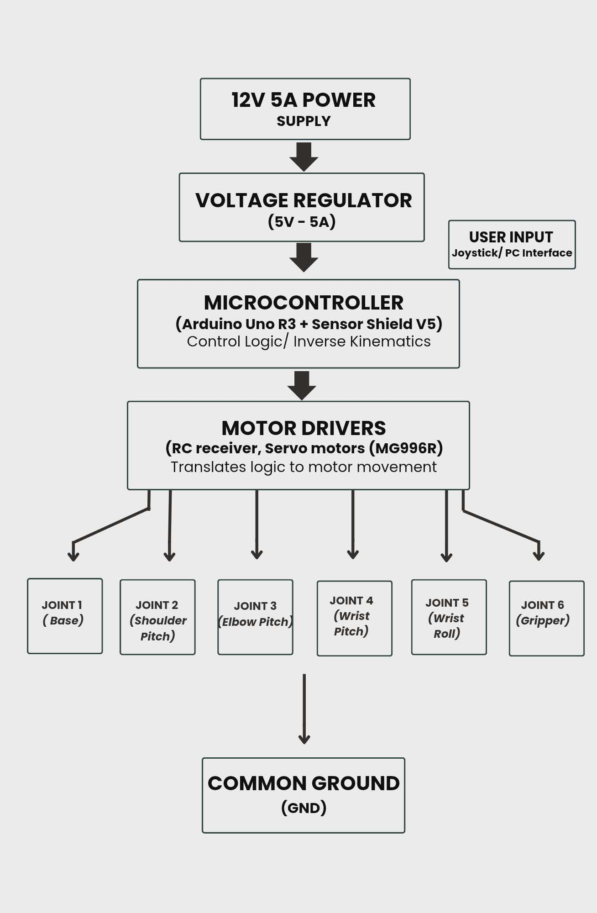
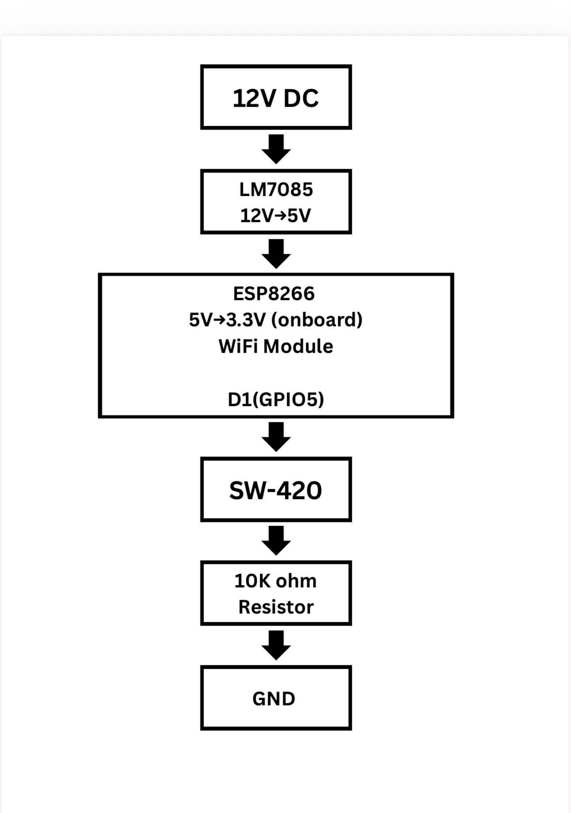
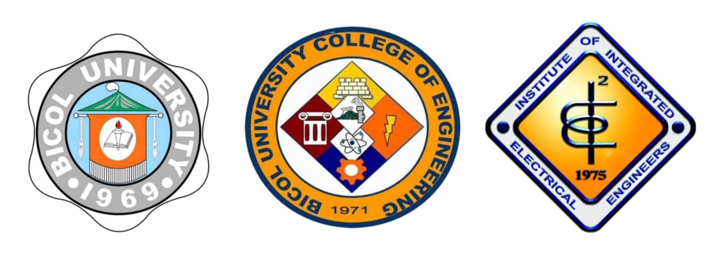

BSEE-3A
Bicol University College of Engineering, Legazpi City, Albay, Philippines, 4500
(SUBSTATION INSPECTION & REMOTE INTERVENTION UTILITY SYSTEM)
An electrical substation serves as the heart of a power system. This is where change, inspection, and control of voltage and current take place to ensure that electric energy is delivered safely from power plants to consumers. However, despite its importance, inspection and maintenance of substations is still marked as a challenge in this field. Workers assigned for inspection and maintenance are subjected to the risks and hazards of a substation. This situation consumes more time and gives health risks to workers, which results in difficulty in maintenance and inspection. One of the problems in this field is the limitation of manual inspection. Sole reliance on human workers to inspect, maintain, and select defective equipment takes more time, which can cause massive damage to the system when overheating or loose connections are not detected at an early stage. Aside from this, workers are put at health risks and accidents, especially when inspecting high-voltage areas. This kind of incident causes loss in human lives and economic growth. In the Philippines, this kind of innovation is particularly important. As an archipelagic country, electric energy distribution is a bit of a challenge. Several substations are located in places that are far and difficult to inspect. Thus, manual inspection consumes a bigger amount of time and money, and it needs additional workers as well as logistic support. To address this, building a robotic system that is cost-effective and easy to apply in a local context is crucial. According to Proven Robotics, robots are now widely applied in the electronics industry to test efficiencies and reduce the risks involved. Such versatility indicates potential changes across different sectors through robotics. In addition, NerdBot has mentioned that there is increased demand for robotics in electrical engineering courses to develop a more robust foundation and importance for projects that prepare students for real-life applications.


Project Sirius Mk. ll is an inspection assistant that can monitor the condition of equipment in a substation using different sensors. This serves as an alternative way of inspection that is safer and more efficient, rather than relying on manual inspection. Project Sirius Mk. ll is not just a simple prototype but a stepping stone for safer and more efficient inspection of substations. This project integrates the practical needs of the industry and the academic goal of electrical engineering education. This showcases the potential of future engineers to create solutions to problems with a direct effect on the community.
Project Sirius Mk. II is not just a practical solution to substation inspections but is an application of theoretical concepts relative to electrical engineering. This project has a huge relevance to the principles of feedback and control systems, which serve as the foundation of modern robots and automation. One of the most important aspects of control theory is closed-loop control. In Project Sirius Mk. II, the sensor readings are frequently monitored and used to adjust the motor outputs. This mechanism shows the actual application of the feedback concept, where the system automatically corrects itself based on real-time data (Britannica, 2025). Part of closed-loop control in a robot is its ability to correct errors. Whenever there's an error like misalignment of a robotic arm or a wrong sensor reading, it will be detected immediately, and then the controller will correct it. This is an example of error dynamics that emphasizes control theory. This shows that the system will still be reliable even when faced with uncertainties (Discover Engineering, 2025). Project Sirius Mk. II development will henceforth aim at precision and durability with an error conditioning operational system closed in feedback control.
The feedback and control systems provide an academic project context for Project Sirius Mk II. This project not only serves as a prototype that answers the need for inspection but also as a real-life application of the principles tackled within electrical engineering. This shows how even the most abstract concepts, such as transfer functions, stability margins, and error dynamics, are applicable in a real robot. This project is a demonstration of the application of the theoretical and conceptual framework of feedback and control systems.
The primary objective of this project is to design a prototype of an intelligent robot with a system displaying the application of the principles of feedback and control systems. The system intends to address practical issues in distribution substations, especially equipment inspection, condition monitoring, and safe remote operation.
To achieve the general objective, the project pursues the following specific objectives:
1. To design a feedback loop capable of providing realtime sensor data to ensure reliable and accurate robot operation.
2. To use PID control to maintain system stability and precision in executing substation tasks.
3. To create a prototype of a core functionality that is directly relevant and core to substation operations, such as: - Thermal imaging for detecting hotspots in busbars, transformers, and breaker contacts. - Vibration and noise monitoring for identifying abnormal mechanical activity in cooling fans, pumps, and transformers. - Environmental monitoring for measuring temperature and humidity, and detection of gas leakages like SF6.
4. To perform system testing and response analysis to assess the robot's effectiveness under real-life scenarios concerning obstacle avoidance, monitoring functions, and remote actuation.
The main focus of robotics is feedback control, providing machines with intelligence and stability. Closed-loop systems are robots that collect data from sensors and compare it with the desired state, using the error signal for actuator movement adjustments. This mechanism grants autonomy and resilience, thereby making it imperative for successful operations in critical areas like surgery, manufacturing, and disaster response (AZoRobotics, 2025). Feedback mechanisms for a long time have had applications that range from the simplest mechanical governors to advanced robotic systems. These soft types of robots require more complex feedback because of their flexible and non-linear dynamics.Some studies demonstrated model-based dynamic feedback control as a method of improving trajectory tracking and allowing for safe interaction in planar soft robots, which have been considered very difficult to control due to their compliance (Della Santina et al., 2020).
The importance of feedback in control depends on the system's stability. Long feedback loops may cause the oscillation or overreaction of the robot, which can, in turn, bring about dangerous or inefficient operations. The controllers designed suitably for such situations enable smooth responses to disturbances such as particle vibrations, friction, and external forces. This ability becomes critical, especially for mobile robots traversing uneven terrains (Peng et al., 2025).In addition to providing stability, feedback control also provides robustness. In real life, sensor data is rarely flawless; noise, delays, and degradation are the order of the day. No matter how imperfect this input may be, the feedback mechanism does everything to keep performance on par. In industrial robotics, force feedback ensures that the right amount of pressure is maintained during welding and assembly so as not to damage the product (Wang, 2025). Some recent investigations have exploited the use of feedback control in conjunction and integration with optimization methods.Feedback control methods such as bioinspired algorithms, including particle swarm and genetic algorithm systems, attempt to robot arms in tracking the decreased errors so that accuracy and reliability increase in task scheduling. Thus, such a combination fosters profound reasoning for advanced feedback control systems in the industrial field (Kuo et al., 2024).
Feedback control is demonstrated to be equally important in industrial applications. Robotic arms executing precision tasks, like micro-assembly and welding, continuously measure position and force via sensors, and controllers correct movements to eliminate any errors. This mechanism is responsible for very high repeatability, an important aspect for mass production. Feedback control also finds its application in logistics robots, which allows them to traverse through warehouses safely without colliding with any obstacles (Wang, 2025). Feedback control mechanisms also guarantee safe navigation through warehouses for logistics robots without hitting obstacles (Wang, 2025). This field is developing quickly with experimental applications of brain-inspired and AI-driven feedback control. Techniques from biomimetics and applications of neural networks in humanoid and soft robot control are data-based approaches interfaced with the feedback system. This novel area of research is laying the foundations for the development of robotic systems that are flexible, intelligent, and human-like (Alepuz et al., 2024).
The Project Sirius MK. II's core movement relies on a modified toy car equipped with ultrasonic sensors and LiDAR. The movements of the vehicle in the substation yard are mostly performed in a fast and efficient way, where the possibility of collision with poles, panels, and other equipment is kept at an absolute minimum. The speed and directional control of these movements employ a PID method with stable performance for instant applied changes in the environment; these alterations approximate smooth trajectories by taking into consideration proportional, integral, and derivative aspects of position and speed correction. This technique is commonly used in robotics because it is simple and efficient. For the complex environment at a substation, a single sensor does not suffice. Sensor Fusion integrates inputs from both ultrasonic and LiDAR sensors to mitigate false positives, such as mistaking shadows or reflections for obstacles. Therefore, the robot becomes spatially much more aware with fusion and plans its path more reliably, making it possible for fully autonomous navigation in places where critical equipment is located. The vibration monitoring subsystem helps in sensing abnormal movement in cooling fans, pumps, and transformers. The vibration patterns vary according to the load, age of the equipment, and surrounding ambient noise; therefore, fixed thresholds are inadequate. Adaptive control is used to adjust sensor sensitivity automatically. The method provides a better detection of abnormal vibrations while minimizing false alarms. These adaptive strategies serve as a crucial preventive maintenance tool, enabling the early detection of mechanical failure signs before they escalate (Pham & Kuo, 2025).
The safety layers provided by monitoring environmental factors include temperature, humidity, or gas leak detection, such as SF6. Since sensors work with data that is not always accurate, fuzzy logic is implemented to interpret it in a more nuanced way. For instance, an increase in relative humidity and temperature may signal the robot to infer overheating, even if these two parameters have not overstepped their limits. Through fuzzy rules, the robot can generate intelligent alerts and has been proven effective on collisionfree path planning for manipulator robots under uncertainty (Hentout et al. 2022). The camera subsystem is supposed to read indicator lights on circuit breakers and on relays. The parameters of image recognition includes intensity, color, and position-all of which make it more appropriate for state-space control than for a simple PID. The mathematical representation of the system dynamics is given by state-space modeling, which integrates visual data into the decision-making. This offers real-time analysis of visual information and better identification of breaker states (IEEE, 2025). The six-degree-of-freedom arm requires strict control of each joint in opening or closing the panels within the substation. Smooth and accurate movements are ensured at each joint by applying respective PID loops to all joints. Proportional action takes place immediately from the value of instantaneous error, integral action eliminates steady-state error, and derivative action provides to reduce overshoot. This ensures stabilized operation, which is important for high-precision tasks like locking and unlocking the panel (IEEE PID Arm, 2024). For more complicated trajectories with multiple joints in simultaneous motion, a hybrid approach is implemented. It ensures fast local response and global arm dynamics coordination through the fusion of PID with state-space control, facilitating safe and predictable motion, even under high collision risk in multi-joint tasks.
The control strategies of Project Sirius MK II are configured according to the needs of each subsystem. The PID for motors and joints; adaptive control for vibrations and uncertain loads; fuzzy logic for environmental monitoring and safety; state-space control for multi-variable subsystems like camera and arm coordination; and supervisory control for interactive integration of all modules into one system. This makes Project Sirius MK II a robust, smart, and safe solution for substation inspection and remote intervention.
The interior of the robot consists of several significant subsystems like obstacle avoidance sensors, vibration monitoring modules, a thermal imaging unit, a camera subsystem, environmental monitoring sensors, and control boards for the robotic arm. Their arrangement follows the principles of 3D interactive scene construction described by Fan and Liang (2024), where virtual reality and deep learning are used to model spatial layouts. In Project Sirius MK. II, this principle was adapted to ensure that sensors do not interfere with one another and that electronics are positioned to optimize data flow. Externally, the robot is built on a modified toy car chassis that serves as a base for all subsystems. The chassis was designed to endure and adapt to the varied conditions of a substation yard. Su and Huang (2024) emphasize that structural design and performance evaluation of microtracked chassis improve terrain adaptability, and the same principle was applied to Project Sirius MK. II to ensure smooth movement even on uneven ground or in areas with debris.
Beyond structural evaluation, design optimization was achieved using artificial neural networks, as discussed by Rebhi et al. (2025). The study shows how neural networks can be employed in optimizing load distribution and structural integrity. This strategy was deployed on Project Sirius MK. II to ensure that the robot is properly supported and resistant to wear in prolonged operation. The integration of interior and exterior subsystems is anchored in mathematical and control models. According to OrtigosaMartínez et al. (2023), mathematical modeling in soft robotics offers the framework by which flexible systems could subsequently be analyzed and controlled. Project Sirius MK. II adopts similar models to ensure that sensors, actuators, and control boards are seamlessly integrated with the chassis and external mounting. The robotic arm requires stable control to perform panel manipulation tasks. Alizadeh and Zhu (2024) state that state-space frameworks are crucial in controlling multi-joint arms in space robotics. Project Sirius MK. II uses this principle to keep the arm stable even while it is mounted onto a mobile chassis for more accurate movements and safer operations in substations. Besides state-space modeling, supervisory control is also important in coordinating all subsystems by a central control center. This supervisory layer manages communications across individual modules and synchronizes operations, hence including obstacle avoidance, vibration monitoring, environmental sensing, camera imaging, and robotic arm control.
The interior subsystems were structurally organized through the application of VR-based modeling. The structural optimization of the exterior chassis was done using neural networks and structural evaluation. The integration of both was supported by mathematical and state-space models. Cost analyses were structured according to established collaboration robot models for transparency and accountability across teams. These approaches make the project even more robust, intelligent, and well-prepared for conducting inspection and intervention at substations through remote means.
Project Sirius Mk. II aka Substation Intervention and Inspection Utility System is a mobile robotic device designed for remote inspection, monitoring, and intervention in electrical substations. The project was created to allow personnel to safely operate key apparatuses on hazardous environments such as substations. The device is built around a mobile platform that can move within such areas while carrying various sensors and tools for operation purposes. It is also equipped with visual and thermal cameras that allow operators to remotely observe equipment in real time and detect potential issues such as overheating components. Additionally, environmental sensors are used to monitor parameters such as temperature and humidity, in order to identify abnormal operating conditions. Project Sirius Mk. II incorporates a robotic arm that enables remote interaction with electric apparatuses, allowing indirect intervention whilst providing safety towards the personnel. All system functions are managed through an integrated control system that handles movement, sensor data collection, and communication. A remote interface is provided to allow operators to view live feedback from a safe location while manually maneuvering the device. The system was designed with an emphasis on practicality, safety, and affordability, making use of readily available and repurposed components. Initially developed as an academic prototype, Project Sirius Mk. II demonstrates the application of feedback and control principles while providing a foundation for future improvements and potential real-world use in substation inspection and maintenance.

Inputs: Sensor data from temperature, humidity, and vibration sensors Visual input from the camera system Thermal data from the thermal camera User control commands from the remote interface Process: The system processes sensor data and user commands within the control unit. The data is analyzed to determine the required motion or action of the robot and its components. Controller: A microcontroller serves as the main controller, executing the control algorithms and managing communication between sensors, actuators, and the remote interface. Outputs: Motor signals for robot movement Actuator control signals for the robotic arm Visual and thermal feedback displayed on the user interface
Robot platform/components (motors, sensors, actuators, microcontrollers) - Remote-Controlled Toy Car - Thermal Sensor - Camera - Vibration Sensor - Environmental Imaging - Robot Arm



The control algorithm implemented in Project Sirius Mk. II is based on a rule‑based closed‑loop control approach. The system continuously receives input from various sensors and user commands through the control interface. These inputs are processed by the microcontroller to determine the appropriate action of the system. Based on predefined conditions, the controller generates control signals for the motors, robotic arm, and other actuators. For example, when an obstacle is detected by the ultrasonic sensor, the controller commands the motors to stop or change direction. Similarly, sensor data such as temperature, vibration, and environmental readings are processed to trigger monitoring alerts or system responses. This algorithm ensures stable and responsive system operation.
The feedback mechanism of the system is provided by the integrated sensors and monitoring devices. These sensors continuously send real‑time data back to the controller, allowing the system to observe its current operating condition. Feedback is obtained from the ultrasonic sensor for obstacle detection, environmental sensors for temperature and humidity monitoring, vibration sensors for equipment condition monitoring, and camera systems for visual confirmation. This feedback allows the controller to verify whether the system’s actions are effective and to make adjustments when necessary.
The development of the Project Sirius Mk. II prototype followed a systematic engineering design process, beginning with the conceptualization of a modular architecture. This approach was essential to ensure that each functional requirement are navigation, monitoring, and intervention. This could be developed and tested independently before being integrated into a single supervisory system. Initial structural planning was guided by the principles of spatial layout optimization, ensuring that the placement of high-sensitivity electronics and power-heavy actuators did not result in electromagnetic interference or signal degradation across the communication bus. The physical construction began with the selection and modification of a micro-tracked chassis, repurposed from a robust toy car. This base was chosen for its inherent terrain adaptability, allowing the robot to traverse the varied and often uneven surfaces found in substation yards. Structural reinforcement was applied using structural integrity models to ensure the chassis could support the combined weight of the sensor suite and the 6-DOF robotic arm without compromising the center of gravity. This mechanical foundation served as the mobile platform for all subsequent electronic installations.
Hardware integration proceeded with the installation of the navigation and obstacle avoidance suite. The researchers implemented a sensor fusion strategy, mounting both ultrasonic sensors and LiDAR modules to the front and sides of the chassis. This phase involved precise calibration of the sensor FOV (Field of View) to eliminate "blind spots" during autonomous movement. Wiring was structured according to the I/O mapping identified in the preliminary design, utilizing dedicated terminal blocks to maintain the industrial wiring standards required by the BSEE curriculum. Following navigation, the condition-monitoring subsystem was integrated. This involved the placement of specialized sensors for SF6 gas detection, thermal imaging, and vibration monitoring. To ensure accurate data acquisition, signal conditioning was applied to the analog inputs, converting raw voltages into digital values through the microcontroller’s ADC. Adaptive thresholds were programmed into the controller during this stage to account for ambient noise and varying environmental conditions, ensuring that the robot could distinguish between normal operating heat and a critical "hotspot" in a transformer. The assembly of the six-degree-of-freedom (6-DOF) robotic arm represented the most complex phase of the hardware development. Each joint was equipped with high-torque servo motors and individual PID loops to ensure smooth, high-precision movement. The arm was mounted in a position that allowed for maximum reach while maintaining the stability of the mobile base. Bench testing was conducted to verify that the arm could effectively manipulate circuit breaker panels and execute the "locking and unlocking" motions required for substation intervention. In the software development phase, the researchers encoded the supervisory control logic that unifies all subsystems. Using a rule-based closed-loop approach, the microcontroller was programmed to prioritize safety-critical inputs. For instance, the logic was designed so that a detection of SF6 gas or a critical obstacle would override standard movement commands. System-wide testing and refinement were then conducted to assess the interaction between the software and hardware components. This involved iterative PID tuning to reduce "overshoot" in motor movements and the application of software filters to clean up noisy sensor data. During this stage, the researchers utilized real-time data from the remote interface to verify that the visual and thermal feeds were synchronized with the robot's physical position. Any errors in error dynamics or misalignment of the robotic arm were corrected through the feedback control mechanism. The final phase of development resulted in the completion of the Project Sirius Mk. II prototype, a fully functional Substation Intervention and Inspection Utility System. The completed prototype represents a transition from abstract theoretical concepts such as Laplace transforms and transfer functions to a tangible engineering solution. By integrating modular hardware with robust control strategies, the researchers produced a device capable of remote condition monitoring and safe intervention, effectively meeting the project’s general objectives and preparing the system for final experimental validation.
Alepuz, A. M., Papageorgiou, D., & Tolu, S. (2024). Brain-inspired biomimetic robot control: a review. Frontiers in Neurorobotics, 18, 1395617. https://doi.org/10.3389/fnbot.2024.1395617 Alizadeh, M., & Zhu, Z. H. (2024). A comprehensive survey of space robotic manipulators for on-orbit servicing. Frontiers in Robotics and AI, 11, 1470950. https://doi.org/10.3389/frobt.2024.1470950 AZoRobotics. (2025, November 10). How do Robots Use Feedback? https://www.azorobotics.com/Article.aspx?ArticleID=161 Barravecchia, F., Mastrogiacomo, L., & Franceschini, F. (2023). A general cost model to assess the implementation of collaborative robots in assembly processes. The International Journal of Advanced Manufacturing Technology, 125(11–12), 5247–5266. https://doi.org/10.1007/s00170-023-10942-z Client challenge. (n.d.). Retrieved December 22, 2025, from https://www.slideshare.net/slideshow/robotics-and-its-applications-in-electrical-engineering/275275997 Della Santina, C., Katzschmann, R. K., Bicchi, A., & Rus, D. (2020). Model-based dynamic feedback control of a planar soft robot: trajectory tracking and interaction with the environment. The International Journal of Robotics Research, 39(4), 490–513. https://doi.org/10.1177/0278364919897292 Du, Z., Zhang, G., Zhang, Y., Chen, J., & Zhang, X. (2024). Path planning of substation inspection robot based on high-precision positioning and navigation technology. International Journal of Low-Carbon Technologies, 19, 1754–1765. https://doi.org/10.1093/ijlct/ctae125 Encyclopaedia Britannica. (2025, December 5). Automation – Feedback, control systems, robotics. Britannica. https://www.britannica.com/technology/automation/Feedback-controls Fan, Y., & Liang, L. (2024). A 3D interactive scene construction method for interior design based on virtual reality. Artificial Life and Robotics, 30(1), 173–183. https://doi.org/10.1007/s10015-024-00985-0 Hentout, A., Maoudj, A., & Aouache, M. (2022). A review of the literature on fuzzy-logic approaches for collision-free path planning of manipulator robots. Artificial Intelligence Review, 56(4), 3369–3444. https://doi.org/10.1007/s10462-022-10257-7 Introduction to State-Space Control. (2025, June 21). FIRST Robotics Competition Documentation. https://docs.wpilib.org/en/stable/docs/software/advanced-controls/state-space/state-space-intro.html Jin, M., Tang, Y., & Wang, Z. (2024). Comprehensive analysis of inspection robot technology and application in Substation. In Advances in intelligent systems research/Advances in Intelligent Systems Research (pp. 136–147). https://doi.org/10.2991/978-94-6463-370-2_16 Kelly. (2025). Robotics applied to substations, current and future trends. TJ|H2b. https://tjh2b.com/white-papers/robotics-applied-to-substations-current-and-future-trends Kuo, P., Syu, M., Yin, S., Liu, H., Zeng, C., Lin, W., & Yau, H. (2024). Intelligent optimization algorithms for control error compensation and task scheduling for a robotic arm. International Journal of Intelligent Robotics and Applications, 8(2), 334–356. https://doi.org/10.1007/s41315-024-00328-z Lee, S. (n.d.). Feedback control: the backbone of robotics. https://www.numberanalytics.com/blog/feedback-control-in-robotics-principles-and-applications Ortigosa-Martínez, R., Martínez-Frutos, J., Mora-Corral, C., Pedregal, P., & Periago, F. (2023). Mathematical modeling, analysis and control in soft robotics: a survey. SeMA Journal, 81(1), 147–164. https://doi.org/10.1007/s40324-023-00334-4 Parametric curve-based State-Space Representation for Shape Control of Soft-Continuum Manipulators. (2025, April 22). IEEE Conference Publication | IEEE Xplore. https://ieeexplore.ieee.org/document/11020909 Peng, Y., Yang, L., Sun, Y., & Chen, X. (2025). Novel claw-type continuum robots: design, modeling, and control. Frontiers of Mechanical Engineering, 20(3). https://doi.org/10.1007/s11465-025-0832-8 Pham, P., & Kuo, Y. (2025). Online reinforcement learning based real-time robust adaptive control design for robot manipulators. International Journal of Control Automation and Systems, 23(10), 3048–3059. https://doi.org/10.1007/s12555-024-0399-x Rakhmatillaev, J., Bucinskas, V., & Kabulov, N. (2025). An integrative review of control strategies in robotics. Robotic Systems and Applications. https://doi.org/10.21595/rsa.2025.25014 Rebhi, L., Khalfallah, S., Hamel, A., & Essaidi, A. B. (2025). Design optimization of a four-wheeled robot chassis frame based on artificial neural network. Proceedings of the Institution of Mechanical Engineers Part C Journal of Mechanical Engineering Science, 239(12), 4756–4773. https://doi.org/10.1177/09544062251316755 Robotics, P. (2025, February 3). 25 Applications of Robots in Electronics Industry - PROVEN Robotics. PROVEN Robotics. https://provenrobotics.ai/robots-in-electronics-industry/ Santiago, R. (2024a, October 20). Feedback Control Systems: theory and applications. Discover Engineering. https://www.discoverengineering.org/feedback-control-systems-theory-and-applications/ Su, C., & Huang, H. (2024). Enhancing terrain adaptability of micro tracked chassis: a structural design and performance evaluation. Mechanika, 30(6), 544–559. https://doi.org/10.5755/j02.mech.36883 Tang, B., Huang, X., Ma, Y., Yu, H., Tang, L., Lin, Z., Zhu, D., & Qin, X. (2022). Multi-source fusion of substation intelligent inspection robot based on knowledge graph: A overview and roadmap. Frontiers in Energy Research, 10. https://doi.org/10.3389/fenrg.2022.993758 Tuning of a Robotic Arm using PID Controller for Robotics and Automation Industry. (2024, June 20). IEEE Conference Publication | IEEE Xplore. https://ieeexplore.ieee.org/document/10668952 Wang, Z. (2025). Research on force feedback technology for industrial robot. Applied and Computational Engineering, 126(1), 125–130. https://doi.org/10.54254/2755-2721/2025.20105
Project SIRIUS MK. II represents more than just a technical achievement—it embodies teamwork, innovation, and perseverance. Through months of planning, designing, and testing, the team not only developed an intelligent inspection system but also gained valuable lessons in collaboration and problem-solving. The project demonstrated how modern automation can significantly enhance operational safety and efficiency in electrical substations. Beyond the hardware and programming, it taught the importance of persistence, adaptability, and shared goals. As future engineers, we envision this project as a stepping stone toward smarter, safer, and more sustainable industrial solutions. The experience has strengthened our confidence to take on even greater challenges ahead.
Bicol University College of Engineering, Legazpi City, Albay, Philippines, 4500

Engr. Rogie Mar A. Bolon
Engr. Vincent Domo Diaz
Engr. Melody Mae P. Montas
Institute of Integrated Electrical Engineers